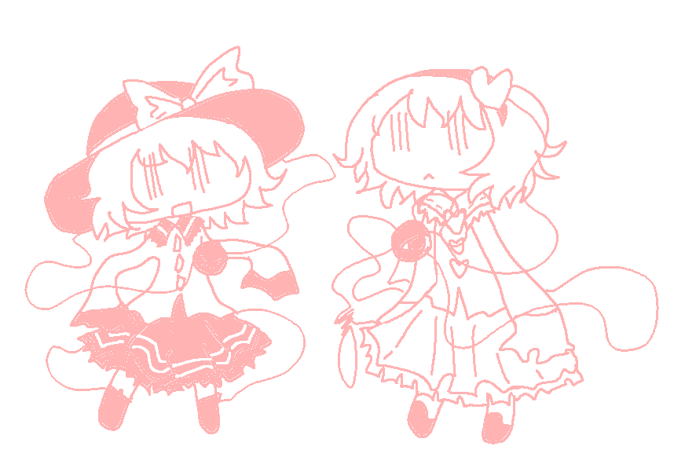

music: SUSUMU HIRASAWA, jun togawa, nashimoto ui, koronba, wumpscut, hate in the box, shinsei kamattechan, wowaka, siinamota, my dead girlfriend, devi mccallion
animanga: shimeji simulation, girls last tour, franken fran, hidamari sketch, haibane renmei, obsolete dream, lucky star, bocchi the rock, angel's egg
video games: touhou, pathologic, cave story, hylics 2, muse dash, pokemon, ghost suburb 2, black souls 1+2, lisa rpg, yume nikki, mogeko castle, wadanohara and the great blue sea, hello charlotte, off, hylics
visual novels: higurashi, umineko, ciconia, higanbana, subahibi, tsui no sora remake, milk outside a bag of milk, q.u.q., katawa shoujo, va-11 hall-a
other: vocaloid, utau, cookie☆, nekojiru's work, koishi komeiji's heart-throbbing adventure
hobbies: cosplay, anime conventions, world history, linguistics, geography, art, htmlcss(obviously), egl fashion, cooking/baking
